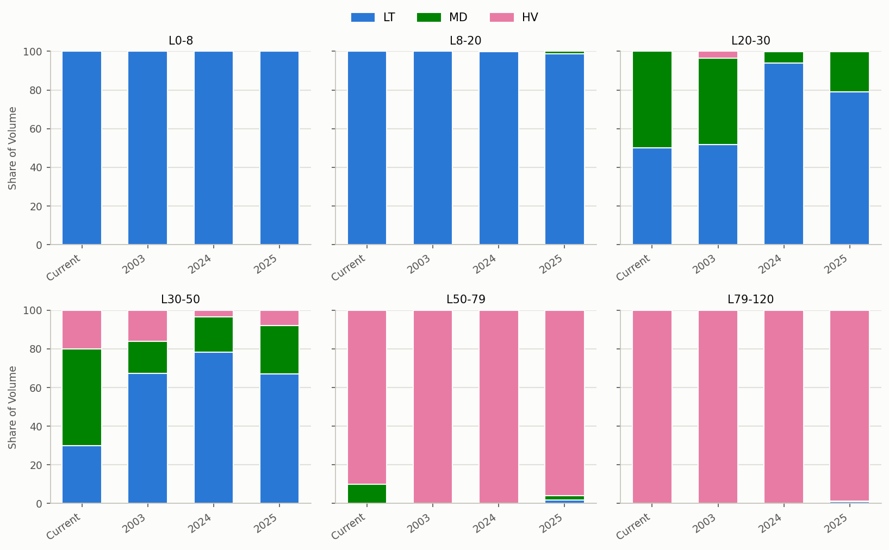
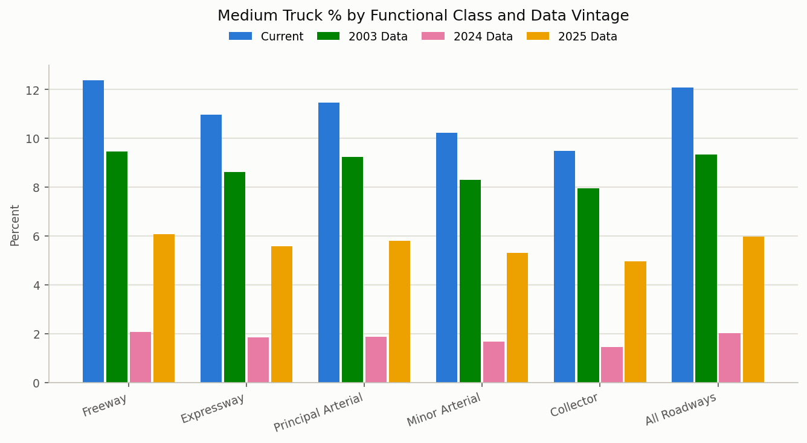
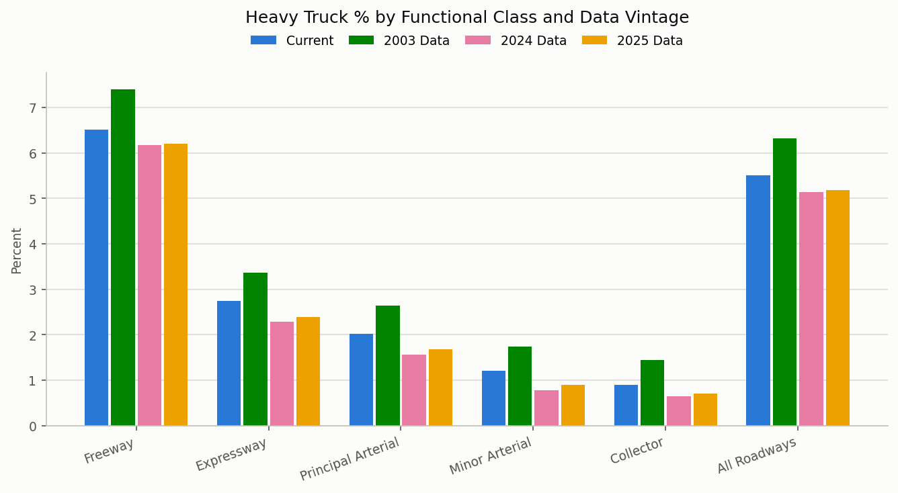

| Functional Class | Stations | Medium Truck % | Heavy Truck % |
|---|---|---|---|
| Freeway | 36 | 12.4% | 6.5% |
| Expressway | 12 | 11.0% | 2.7% |
| Principal Arterial | 23 | 11.5% | 2.0% |
| Minor Arterial | 5 | 10.2% | 1.2% |
| Collector | 4 | 9.5% | 0.9% |
| All Roadways | 80 | 12.1% | 5.5% |
Truck Validation
This page compares Medium (Single Unit, “MD”) and Heavy (Combination Unit, “HV”) truck percentages and VMT by functional class from three independent sources, so the model’s truck mix can be checked against observed data:
- CCS Station Data — truck percentages measured directly at UDOT Continuous/Classification Count Station (CCS) locations, matched to their nearest model segment.
- HPMS VMT Data — UDOT’s AADT and truck-factor estimates (
AADT2023,SUTRUCKS,CUTRUCKS) applied to the full network and rolled up to an effective, distance-weighted truck percentage. - Model VMT Data — the model’s own segment volumes by vehicle class, rolled up the same way.
A fourth, external check against FHWA’s statewide VM-4 data is discussed in Regional Context below.
Methodology note: The CCS truck percentage is a volume-weighted average — for each functional class, total medium/heavy truck volume across all matching stations is divided by total volume across those stations (so higher-volume stations count more, rather than every station counting equally). The HPMS and Model truck percentages are VMT-weighted — each segment’s truck/total volume is multiplied by its length (DISTANCE) before summing, so longer segments contribute proportionally more, consistent with how the existing VMT validation figures on the Highway Assignment page are built. A small number of non-highway/connector segments have UDOT truck factors that aren’t considered reliable; those segments are still counted toward total HPMS volume but excluded from the Medium/Heavy truck volume in the HPMS table.
VMT comparison basis: CCS and HPMS stations/segments don’t cover the whole network the way the model does, so the Medium/Heavy Truck VMT tables below express all three sources as an Effective VMT — each source’s own truck percentage for a functional class, applied to the model’s full-network total VMT for that class. This puts CCS, HPMS, and Model on the same complete-network basis so they’re directly comparable; the Model VMT column is simply the model’s own actual VMT (it needs no extrapolation, since it already covers every segment). Note this means “Model VMT” here is the full network total and will differ from the Highway Assignment page’s “2b. Total Daily VMT by Roadway Class” table, whose “Model” column is restricted to only the segments that also have valid HPMS data (via an inner join) — a narrower, HPMS-matched comparison basis.
Detailed Source Data
The tables below show each source’s own functional-class breakdown in full detail, including sample size (Stations/Segments) and the underlying methodology for each source.
CCS Station Truck Percentages
CCS Truck Volume by Vehicle Length Class
The table below shows the average daily (Tue/Wed/Thu) raw CCS count volume, split into Medium and Heavy truck volume using the Wavetronix/UDOT length-bin factors below, summed across all CCS stations. This is a region-wide cross-check on the Medium/Heavy split feeding the functional-class table above — the Total row’s MD/HV volumes should match the “All Roadways” MD/HV totals used there.
| Wavetronix Class | Length Bin | LT | MD | HV |
|---|---|---|---|---|
| Class 6: 0-8ft | L0-8 | 100% | 0% | 0% |
| Class 8: 8-20ft | L8-20 | 100% | 0% | 0% |
| Class 9: 20-30ft | L20-30 | 50% | 50% | 0% |
| Class 2: 30-50ft | L30-50 | 30% | 50% | 20% |
| Class 3: 50-79ft | L50-79 | 0% | 10% | 90% |
| Class 5: >79ft | L79-120 | 0% | 0% | 100% |
| Vehicle Length Class | Total Volume | MD Volume | HV Volume |
|---|---|---|---|
| Class 6 (0-8 ft) | 139,505 | 0 | 0 |
| Class 8 (8-20 ft) | 4,349,519 | 0 | 0 |
| Class 9 (20-30 ft) | 1,190,001 | 595,001 | 0 |
| Class 2 (30-50 ft) | 272,357 | 136,178 | 54,471 |
| Class 3 (50-79 ft) | 217,323 | 21,732 | 195,591 |
| Class 5 (>79 ft) | 99,551 | 0 | 99,551 |
| Total | 6,268,256 | 752,911 | 349,613 |
HPMS Truck Percentages (VMT-Weighted)
| Functional Class | Segments | Medium Truck % | Heavy Truck % |
|---|---|---|---|
| Freeway | 170 | 8.9% | 6.8% |
| Expressway | 93 | 11.6% | 7.8% |
| Principal Arterial | 834 | 10.3% | 4.3% |
| Minor Arterial | 1,092 | 3.6% | 2.2% |
| Collector | 1,681 | 0.3% | 0.2% |
| Local | 1 | 12.4% | 4.2% |
| All Roadways | 3,871 | 7.7% | 5.0% |
Model Truck Percentages (VMT-Weighted)
| Functional Class | Segments | Medium Truck % | Heavy Truck % |
|---|---|---|---|
| Freeway | 175 | 8.8% | 8.4% |
| Expressway | 98 | 9.5% | 7.3% |
| Principal Arterial | 845 | 10.5% | 4.1% |
| Minor Arterial | 1,159 | 10.2% | 3.4% |
| Collector | 2,080 | 10.0% | 3.1% |
| Local | 22 | 10.9% | 6.7% |
| All Roadways | 4,379 | 9.5% | 6.2% |
Regional Context: FHWA VM-4 State Comparison
The tables above validate the model against three sources that are all local to the WFRC/MAG region. As an outside sanity check, FHWA’s Highway Statistics 2023 Table VM-4 (“Distribution of Annual Vehicle Distance Traveled”) reports each state’s own truck share of urban VMT, split into single-unit (“SU”, roughly comparable to Medium/“MD”) and combination (“Comb”, roughly comparable to Heavy/“HV”) trucks, for the Interstate System and for Other Arterials. Comparing Utah’s statewide figures to neighboring states shows whether Utah’s reported truck mix – which UDOT’s HPMS submission (and therefore this page’s HPMS table) is itself built from – is broadly in line with the region, or an outlier.
Important caveats: these are statewide Utah figures, not WFRC/MAG-area-specific, so they will not match the HPMS/Model tables above exactly. FHWA’s road categories (Interstate System / Other Arterials) are also coarser than the model’s six-class FTCLASS taxonomy – Interstate roughly maps to Freeway, Other Arterials roughly spans Principal + Minor Arterial. And because VM-4 is itself compiled from each state’s HPMS submission, it is not an independent ground truth – it’s a plausibility check on Utah’s reported truck factors against its peers, not a validation of the model.
| State | Interstate SU % | Interstate Comb % | Other Arterial SU % | Other Arterial Comb % |
|---|---|---|---|---|
| Utah | 9.2% | 8.3% | 11.2% | 5.1% |
| Idaho | 3.5% | 9.4% | 2.4% | 1.5% |
| Wyoming | 2.7% | 30.2% | 3.2% | 2.6% |
| Colorado | 3.1% | 5.1% | 2.0% | 1.5% |
| Arizona | 4.5% | 8.3% | 4.0% | 1.7% |
| Nevada | 6.7% | 16.6% | 1.6% | 2.2% |
For context, on Freeway segments this page’s HPMS table shows a Heavy Truck % of 6.8% and the Model shows 8.4%, versus Utah’s statewide urban Interstate combination-truck share of 8.3% reported to FHWA – compared to a 5.1% to 30.2% range across Idaho, Wyoming, Colorado, Arizona, and Nevada. Wyoming’s high combination-truck share reflects its heavy long-haul freight volumes on a thin urban VMT base, not a comparable population/land-use mix to the Wasatch Front – it’s included as a regional bookend rather than a close peer.
Summary Comparison
Quick summary: the four tables below place CCS, HPMS, and Model side-by-side by functional class — the first two compare truck percentages, the second two compare truck VMT. Use the “All Roadways” row for the region-wide figure, and scan down each column to see which functional classes the model over- or under-represents relative to the observed sources. A “—” means that source has no data for that functional class (e.g. no CCS stations were matched to Local roads).
Medium Truck %
| Functional Class | CCS | HPMS | Model |
|---|---|---|---|
| Freeway | 12.4% | 8.9% | 8.8% |
| Expressway | 11.0% | 11.6% | 9.5% |
| Principal Arterial | 11.5% | 10.3% | 10.5% |
| Minor Arterial | 10.2% | 3.6% | 10.2% |
| Collector | 9.5% | 0.3% | 10.0% |
| Local | — | 12.4% | 10.9% |
| All Roadways | 12.1% | 7.7% | 9.5% |
Heavy Truck %
| Functional Class | CCS | HPMS | Model |
|---|---|---|---|
| Freeway | 6.5% | 6.8% | 8.4% |
| Expressway | 2.7% | 7.8% | 7.3% |
| Principal Arterial | 2.0% | 4.3% | 4.1% |
| Minor Arterial | 1.2% | 2.2% | 3.4% |
| Collector | 0.9% | 0.2% | 3.1% |
| Local | — | 4.2% | 6.7% |
| All Roadways | 5.5% | 5.0% | 6.2% |
Medium Truck VMT
| Functional Class | CCS Effective VMT | HPMS Effective VMT | Model VMT |
|---|---|---|---|
| Freeway | 3,156,520 | 2,278,717 | 2,244,866 |
| Expressway | 450,174 | 476,406 | 388,359 |
| Principal Arterial | 1,297,188 | 1,159,459 | 1,188,568 |
| Minor Arterial | 784,707 | 278,587 | 780,231 |
| Collector | 529,064 | 17,295 | 559,867 |
| Local | — | 2,202 | 1,937 |
| All Roadways | 6,549,925 | 4,184,175 | 5,163,828 |
Heavy Truck VMT
| Functional Class | CCS Effective VMT | HPMS Effective VMT | Model VMT |
|---|---|---|---|
| Freeway | 1,661,334 | 1,745,596 | 2,136,560 |
| Expressway | 112,801 | 318,935 | 299,085 |
| Principal Arterial | 228,351 | 481,440 | 468,476 |
| Minor Arterial | 92,971 | 169,830 | 261,107 |
| Collector | 49,734 | 12,326 | 172,339 |
| Local | — | 745 | 1,190 |
| All Roadways | 2,983,365 | 2,727,545 | 3,338,758 |
Proposed Changes to Truck Classification
The LT/MD/HV length-bin split factors used throughout this page (100%/100%/50%/30%/0%/0% LT for the six bins, etc. — see the classification table in CCS Truck Volume by Vehicle Length Class) came from UDOT Planning. Separately, UDOT’s Statistics Department has published its own FHWA 13-class vehicle-length distributions — a 2003-vintage dataset (roughly contemporaneous with the current factors), a finalized 2024 dataset, and a finalized 2025 dataset.
Rolling the 13 FHWA classes into the same three groups used elsewhere on this page — Classes 1–4 (motorcycles, passenger cars, pickups/vans, buses) → LT, Classes 5–7 (single-unit trucks) → MD, Classes 8–13 (combination trucks) → HV — and summing each vintage’s class shares within each length bin produces the split factors below. This section documents where the UDOT Statistics data diverges from the UDOT Planning factors currently in use, and what adopting the newer data would do to this page’s CCS results. It is a discussion starting point, not an implemented change — nothing elsewhere on this page uses these alternate factors.
Recomputed LT/MD/HV Split Factors
| Length Bin | Current LT | 2003 LT | 2024 LT | 2025 LT | Current MD | 2003 MD | 2024 MD | 2025 MD | Current HV | 2003 HV | 2024 HV | 2025 HV |
|---|---|---|---|---|---|---|---|---|---|---|---|---|
| L0-8 | 100% | 100% | 100% | 100% | 0% | 0% | 0% | 0% | 0% | 0% | 0% | 0% |
| L8-20 | 100% | 100% | 100% | 99% | 0% | 0% | 0% | 1% | 0% | 0% | 0% | 0% |
| L20-30 | 50% | 52% | 94% | 79% | 50% | 45% | 6% | 21% | 0% | 3% | 0% | 0% |
| L30-50 | 30% | 67% | 78% | 67% | 50% | 17% | 19% | 25% | 20% | 16% | 3% | 8% |
| L50-79 | 0% | 0% | 0% | 2% | 10% | 0% | 0% | 2% | 90% | 100% | 100% | 96% |
| L79-120 | 0% | 0% | 0% | 1% | 0% | 0% | 0% | 0% | 100% | 100% | 100% | 99% |

The current UDOT Planning factors and the UDOT Statistics data agree closely on the two shortest and the longest bins (L0-8, L8-20, L79-120 — effectively 100% LT, LT, and HV respectively in both sources). They diverge substantially in the middle:
L20-30: this is the highest-volume length bin by far (see CCS Truck Volume by Vehicle Length Class — 1.19M of ~6.27M total daily volume, roughly 19%), and it shows the largest practical impact. The current factors assume a 50/50 LT/MD split here; the UDOT Statistics data shows LT increasingly dominant over time (52% in 2003, rising to 79–94% by 2024/2025). Because this bin carries so much volume, reclassifying most of it from “half truck” to “almost all light vehicle” drives a large net reduction in total truck percentage below, not just a reshuffling between Medium and Heavy.L30-50: the current factors assume only 30% LT (70% MD/HV combined). The UDOT Statistics data — consistently across 2003, 2024, and 2025 — puts this bin at 67–78% LT. Same direction asL20-30, smaller volume.L50-79: the current factors assume a 10%/90% MD/HV split. All three UDOT Statistics vintages instead show this bin as ~100% HV, with MD near zero — a shift within the truck categories (Medium → Heavy) rather than a change in total truck volume, but this bin’s volume is small enough that it doesn’t offset theL20-30/L30-50reduction.
Impact on CCS Truck Percentages
The table below reruns the CCS Station Truck Percentages calculation (same spatial matching, same functional-class grouping) substituting the 2003, 2024, and 2025 UDOT Statistics split factors for the current UDOT Planning factors, to show how much the CCS-derived truck percentages would shift.
Medium Truck %
| Functional Class | Current | 2003 Data | 2024 Data | 2025 Data |
|---|---|---|---|---|
| Freeway | 12.4% | 9.5% | 2.1% | 6.1% |
| Expressway | 11.0% | 8.6% | 1.9% | 5.6% |
| Principal Arterial | 11.5% | 9.2% | 1.9% | 5.8% |
| Minor Arterial | 10.2% | 8.3% | 1.7% | 5.3% |
| Collector | 9.5% | 7.9% | 1.4% | 5.0% |
| All Roadways | 12.1% | 9.3% | 2.0% | 6.0% |

Heavy Truck %
| Functional Class | Current | 2003 Data | 2024 Data | 2025 Data |
|---|---|---|---|---|
| Freeway | 6.5% | 7.4% | 6.2% | 6.2% |
| Expressway | 2.7% | 3.4% | 2.3% | 2.4% |
| Principal Arterial | 2.0% | 2.6% | 1.6% | 1.7% |
| Minor Arterial | 1.2% | 1.7% | 0.8% | 0.9% |
| Collector | 0.9% | 1.4% | 0.6% | 0.7% |
| All Roadways | 5.5% | 6.3% | 5.1% | 5.2% |

The result is not a simple Medium-to-Heavy reshuffle. Region-wide (All Roadways), Medium Truck % runs 12.1% (Current) → 9.3% (2003) → 2.0% (2024) → 6.0% (2025), while Heavy Truck % runs 5.5% (Current) → 6.3% (2003) → 5.1% (2024) → 5.2% (2025). The 2003 column — contemporaneous with the current factors — lands close to Current on both, as expected. The bigger break shows up in 2024: Medium drops sharply while Heavy holds roughly steady, meaning total truck share (Medium + Heavy combined) falls overall rather than shifting between the two categories. That’s because L20-30, the single highest-volume length bin, swings from “half truck” (50% MD) under the current factors to “almost entirely light vehicle” (94–79% LT, only 6–21% MD, near-zero HV) under the newer data — so a large share of volume that used to count toward Medium Truck % now doesn’t count as a truck at all. The much smaller L50-79 bin’s shift toward Heavy (10%→0% MD, 90%→100% HV) works in the other direction but isn’t large enough in volume to offset it. 2025 partially reverses the 2024 Medium drop (2.0% → 6.0%) while Heavy stays flat. The overall direction (lower combined truck share than Current/2003) is consistent across both 2024 and 2025 and is worth validating against the raw UDOT Statistics source data before treating it as a basis for changing the page’s methodology.
CCS-Derived 2025/2003 Reclassification Ratio
The table below expresses the CCS reclassification impact (from Impact on CCS Truck Percentages) as a ratio rather than side-by-side percentages: for each functional class, the CCS-derived Medium (or Heavy) Truck % under the 2025 UDOT Statistics split factors divided by the same under the 2003 split factors (the vintage roughly contemporaneous with HPMS’s current truck factors).
| Functional Class | MD Ratio (2025/2003) | HV Ratio (2025/2003) |
|---|---|---|
| Freeway | 0.64x | 0.84x |
| Expressway | 0.65x | 0.71x |
| Principal Arterial | 0.63x | 0.63x |
| Minor Arterial | 0.64x | 0.51x |
| Collector | 0.62x | 0.49x |
| Local | — | — |
| All Roadways | 0.64x | 0.82x |
A “—” means CCS had no matched stations for that functional class (e.g. Local), so no ratio could be computed.
County-Level HPMS VMT with Proposed Adjustment
As a further cross-check, the same 2025/2003 ratio can be applied to actual 2023 HPMS VMT, broken out by county and facility type rather than region-wide. This uses a different, statewide HPMS source than the rest of this page: FHWA’s full HPMS extract for Utah (data/HPMS_FULL_UT_2023.gpkg, fetched by scripts/fetch_hpms_full_ut_2023.py), spatially joined to the model’s super-districts (data/WFv1000_TAZ__DSUP.geojson – whole counties for Davis/Salt Lake/Utah, the model-area slice of the county for Box Elder/Weber) by scripts/build_hpms_vmt_by_county_facility.py. Those two scripts are run manually (not on every quarto render, since the fetch hits an external API); the cell below just reads their cached output and applies the ratio already computed above.
Toggle counties on/off below; the table sums whichever counties are checked by facility type, with a Total row across all facility types. All counties are checked by default, giving the region-wide sum.
VMT Targets (Adjusted)
Combines the above into a single set of VMT targets by facility type – Total VMT, PC/LT VMT (the non-truck remainder, Total − Adjusted MD − Adjusted HV), and the two adjusted truck VMTs – for whichever counties are toggled above.